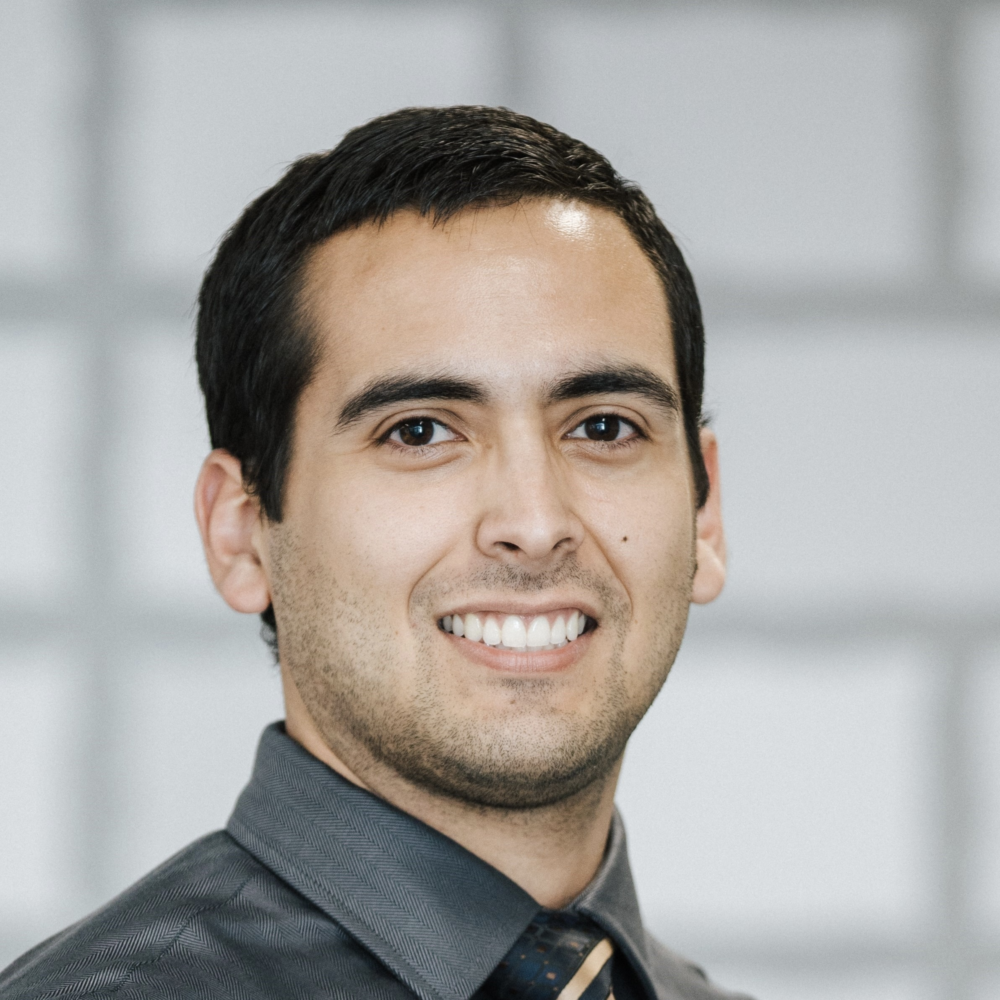

The Team:
Founder
Derek Scholes, BS, RDN
"I am the owner and founder of Gastrointestinal Nutrition Therapy. "
Personal Statement
“I don’t believe you!” When I heard these words come out of my doctor’s mouth, this is when I realized what type of physician I wanted to be. Trusting him enough to discuss my own personal health and having that type of rejection felt devastating. Luckily, I already had plans to become a physician, and this didn’t have much of an effect on me; however, I know for others, this experience would be the ultimate factor in refusing medical care.
Prior to this experience, medicine was not a big part of my family. I had no family members in the healthcare field, and many times, they avoided contact with health care either due to mistrust or financial concerns. What drew me to medicine was the opportunity to help people who not only didn’t have the money but also didn’t have the trust or understanding of the importance of maintaining their own health. I saw the difficulties that my grandma, who knew very little English, passed through as she was in her treatment for breast cancer. I witnessed the lack of understanding that my mom’s Spanish speaking friends had about their medical conditions. I wanted to help with improving that struggle and misunderstanding so that all could receive equal care and proper education about their health.
Since before medical school, I have had the desire to help those with nutritional concerns. The specialty that caught my eye was gastroenterology. Through this specialty, I could aid my patients with IBD, celiac or other intestinal disorders with my background in nutrition and dietetics. In addition, it also allows me to have a hands-on approach to health maintenance through procedural practice. This allows me to have enough diversity in my workflow but also allows me to serve Hispanics in a field where Hispanic providers are sparse. My long-term plans would then be to open a practice that specializes in medical and nutritional management of the gastrointestinal system that focuses on lifestyle and has a multidisciplinary approach.
My most meaningful extracurricular activity is one I recently started this year. It began with a web development course that required me to create a website as the final project. I originally thought of creating a professional site which contained a personal statement and CV, but with time, the idea morphed into something more extraordinary. It became a site where I posted my professional documents, but in addition somewhere I could post self-written, evidence-based articles that discuss nutritional and medical therapy of gastrointestinal disorders. My hope is to further this into a business where I can offer telehealth or consultations for those with gastrointestinal disorders and eventually into my long-term plan of opening my own practice.
In recent years, my focus has primarily been on punctuality, dedication, respect, compassion, and leadership in all my dealings with patients and colleagues. I believe that these qualities are evident in my patients’ satisfaction, my evaluations by residents and faculty, and research. My greatest struggle until now has been how to manage my family responsibilities and apply these qualities at work. I have now realized that integrating these in my everyday life and having discussions with my family about priority has helped increase my ability to serve others while preventing personal and work conflict. In addition to this finding, my greatest accomplishment during medical school beyond work/life balance has been the addition of research participation that has expanded my understanding of colorectal cancer screening in Hispanics as well is IBD treatment in the pediatric population. My accomplishment wasn’t the result of publication, but the information that I learned about gastrointestinal disorders as well as health literacy based on cultural background.